Introduction
Role
Interaction Designer
Goal
- Understand how components support accessibility by accommodating multiple input methods (mouse, keyboard) and output forms (visual style, text, screen reader labels).
- Recognize that components exist in different states to handle user interactions effectively.
- Learn to modify components by balancing trade-offs between learnability, memorability, efficiency, and accessibility.
Problem Statement
Imagine yourself navigating a website or application with a motor, visual, or audio disability. How would your experience differ from the typical user? Consider the challenges you might face with interactions, visibility, and the overall usability of the platform. How can design elements be modified or added to ensure that your experience is as seamless and efficient as possible, without feeling excluded or frustrated?
In user-centered design, it is essential to consider all user groups. Many commonly used components lack accessibility for individuals with motor, visual, or auditory disabilities. With this in mind, redesign a checklist or radio component by balancing learnability, memorability, efficiency, and accessibility. Using existing implementations as a foundation, evaluate the component's accessibility features to assess its usability and identify potential shortcomings.
Research
01. Input
I analyzed the checklist/radio component interaction implementation of three commonly visited website: Amazon, Airbnb, and Google Forms. In order to asses their effectiveness, I reflected on following questions:
- What is the process of interacting with each component like? What's different?
- What are all the functions the component can do (or can't do)?
- Apply the considerations from class: what functionalities of the component are learnable, memorable, efficient?
My findings are summarized in the table below.
| Amazon | Airbnb | Google Forms | |
|---|---|---|---|
| Mouse/Touchpad | In order to select an item, you must click button or label. Every selection reloads the entire page, so if you needed to select many filters, it would be inefficient. | Clicking anything in the line of the option will select it rather than just the button and label. You have to select the enter button to search allowing multiple selections without reload. | There are a few pixels of padding around the label and chekbox that can be selected. Allows for less precision, but not as accesible as Airbnb. |
| Keyboard | Using tab starts at the checkbox options and focuses through each one. Use enter key to select and deselect options. This is an intuitive action and is learnable. | You can step through options logically with tab key. Use spacebar to select but this is unintiutive for new users compared to enter key. | You can use tab to go through the options and spacebar to select/unselect. Enter can not be used to select/unselect. |
| Mobile/Touch | The list is organized differently. You have to find the tab where the filter options are. | Functionality remains the same as touchpad. | Functionality remains the same as touchpad. |
I have concluded form this input research that while many applications aim to meet accessibility needs, there are some aspects of their component designs that can be improved for increased effectiveness.
02. Output
Inputs modify the state of a component, and outputs serve as a visual or functional representation of that state. They allow for a user to better understand their interaction with the component. These outputs can manifest as changes in color, opacity, border size, 3D effects, and more. State can also be conveyed through text. Furthermore, some outputs are not immediately visible, like alt text or component labels, which are typically accessed by screen readers for users with visual impairments.
Returning the the aforementioned three websites, I analyzed the generated output and compared my findings below.
| Amazon | Airbnb | Google Forms | |
|---|---|---|---|
| Mouse/Touchpad | 3 states (default, hover, selected).Selected places a checkmark in the box. | 3 states (default, hover, selected) Hover barely changes the look of the component. The box is slightly bolded. Selected places a checkmark in the box. every selection updates the submit button to include the number of rentals that exist. | 3 states (default, hover, selected) Selected places a checkmark in the box. |
| Keyboard | Focus state replaced hover (heavily bolded around the checkbox) | Focus state replaced hover (heavily bolded around the checkbox). | Focus state replaced hover (shadow around the checkbox) |
| Mobile/Touch | 2 states (no hover). Organized differently than desktop site. | 2 states (no hover). Checkboxes are not oriented the same as on the desktop and you need to put in a direct search to access the filters. | 2 states (no hover) |
Screen Reader
I also used a screen reader to navigate through the component. While there were slight differences in how each company's component interacted with the reader, the overall experience was very unintuitive. For a new user, it was challenging to navigate to the component properly. Moving through the items in the checklist was nearly impossible.
Amazon
I followed the instructions the reader told me and successfully navigated to the component group, but was unable to parse through optins or select them even when I used the keys it indicated.
Airbnb
Same issue as Amazon. It was not intuitive how to move through the options. Maybe I am just not well-versed in the usage of screenreaders, but I also think it could have been made more learnable.
Google Forms
It was easier to get to the items in the list, but I could not select them.
03. Observation Images
Scroll to see all images
Amazon
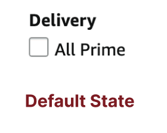
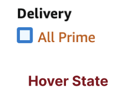
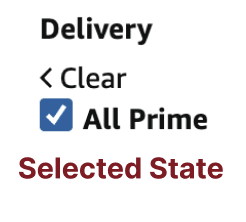
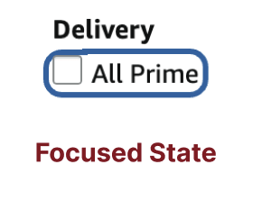
|
Airbnb
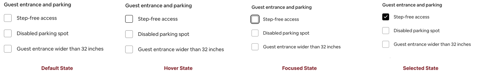
|
Google Forms
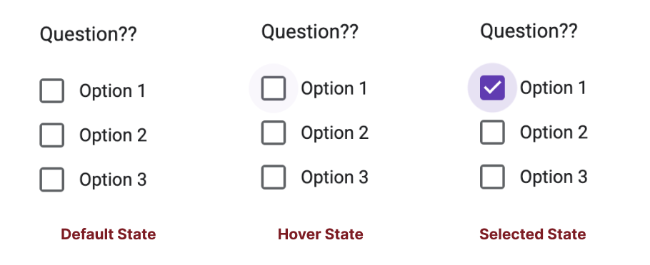
|
Implementation
I chose to redesign the
Airbnb
checklist component.
01. Original State Models
Below are the original state models of the
Airbnb
checklist component.
The first state model focuses on interactions formouse users: |
The second state model focuses on interactions forkeyboard users: |
| 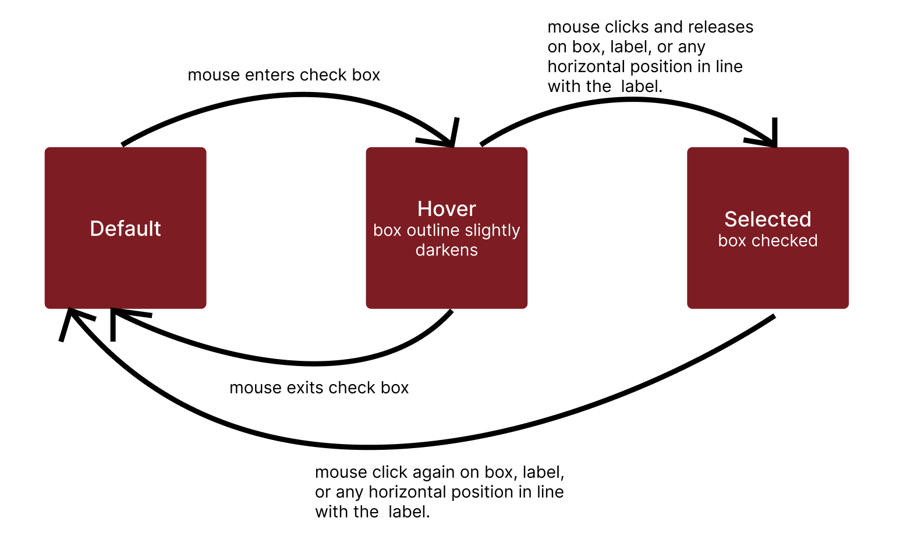 | 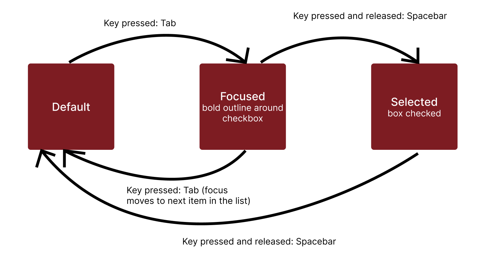 |
02. Redesigned State Models
The first state model focuses on interactions formouse users: |
The second state model focuses on interactions forkeyboard users: |
| 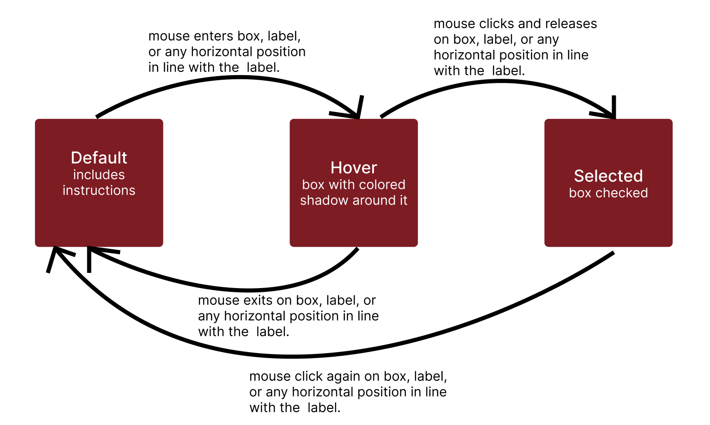 | 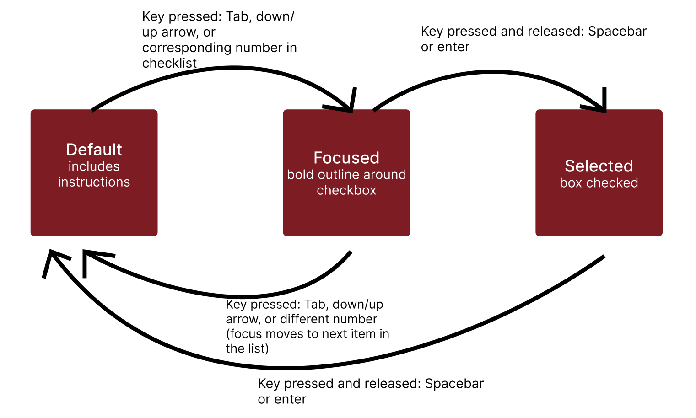 |
My goal in the redesign was to allow more flexibility for the area that users need to click. I expanded the input to include the entire line that the item lies on rather than only the box and label. This was to increase efficiency. I also wanted to include a line of instruction for learnability. It was important to me that the hover function had a clearer state change. For keyboard users, I included enter as a selection/deselection key as I beleive it to be more intuitive than spacebar.
03. Final Redesign
| Default State | 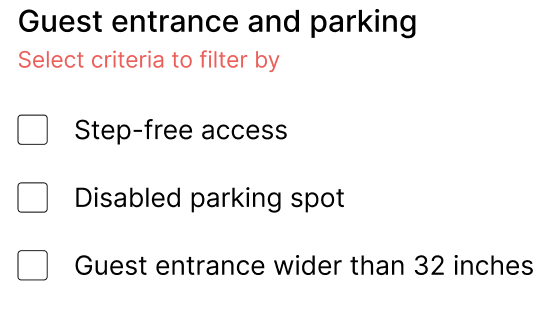 | Learnability:
- short instructional line - users will know how to interact with the component. |
Memorability:
- expanded the keyboard shortcuts to include down/up arrows to toggle between options. - more intuitive and helpful for frequent users. |
| Hover State | 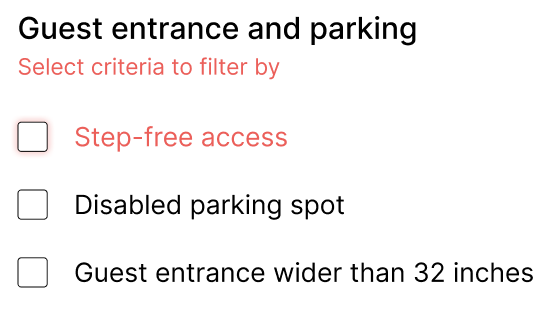 | Accessibility:
- increased the contrast in visual output between default and hover states. - allow users to more easily see the list items they can select. - improved upon the old hover state which barely outlined the checkbox - may also help those that are visually impaired. |
|
| Selected State | 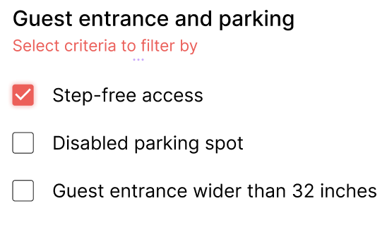 | Efficiency:
- I also expanded the selection window for a given item to be the box, label, and the horizontally aligned area near the label. - selection quicker and easier because you do not have to be particular about clicking inside the box. |
|
Reflection
In my observations, I found that different components excelled in usability and accessibility in various ways:
- Amazon's keyboard navigation is intuitive, allowing users to tab through options and use the enter key for selection, enhancing learnability.
- Airbnb improves accessibility for mouse and touchpad users by expanding the clickable area beyond just the checkbox and label, making selection easier for those with motor impairments.
- Airbnb also prevents unnecessary page reloads, improving efficiency and streamlining the selection process.
- Google Forms provides a slight selection buffer around checkboxes, requiring less precision, which benefits users with motor difficulties.
In my design, I aimed to use the successful features of these applications as well as improve upon some points they missed:
- My design ensured full keyboard accessibility by allowing users to navigate with the tab key and select/deselect using both the enter and spacebar keys.
- I expanded the clickable area around each option to enhance usability for users with limited precision and address their "mismatch" with traditional clickable areas.
- A key improvement in my design was the inclusion of instructions, which increased the learnability of the component for first-time users.
After completing this case study, I have learned a lot about the way companies view accessible interaction design:
- Many companies prioritize mouse and touchpad users because they make up the majority, often neglecting marginalized users with different accessibility needs.
- To create truly inclusive experiences, designers must balance trade-offs and consider usability for all users, not just the majority.
Impact
While I challenged you to imagine yourself as a person with a motor, visual, or audio disability, the truth is that we are privileged to ignore inaccessible designs. So, doing adamant research and implementing proper features can help to keep accessibility at the forefront, ensuring that all users—regardless of their abilities—can navigate and interact with digital spaces effectively. It's essential to prioritize inclusivity in design, so no one is left behind when engaging with technology.